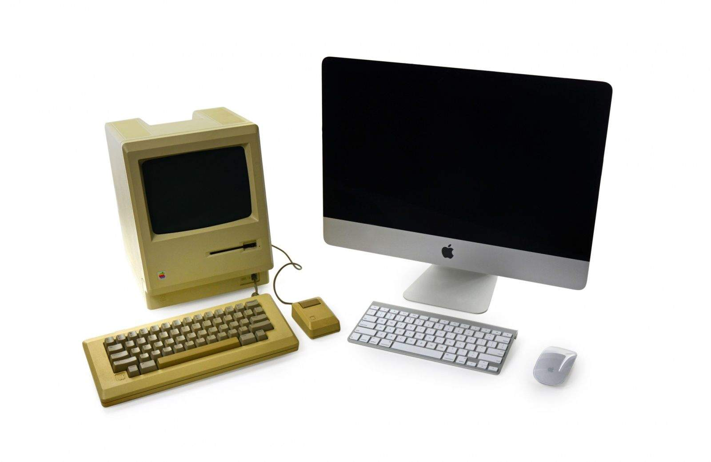
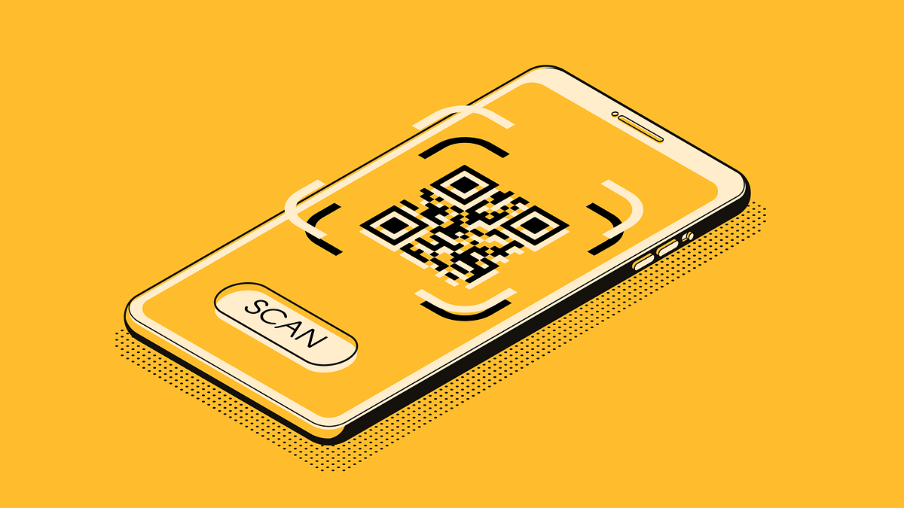

Sobre el proyecto
Descripción General
-
Da un viaje interactivo desde las primeras
computadoras hasta la revolución de las comunicaciones y dispositivos
icónicos que transformaron nuestras vidas.
-
Museo virtual creado por estudiantes de Desarrollo de Software con la
colaboración de profesores.
Nuestro Objetivo

-
El museo virtual busca inspirar y conectar a las generaciones actuales
y futuras con la historia de la tecnología, fomentando la curiosidad y
el aprendizaje sobre cómo la innovación tecnológica ha impactado
nuestras vidas y el mundo en general.
Tecnologías Utilizadas en el desarrollo de la app
-
En el desarrollo del Museo Virtual de Artículos Tecnológicos, hemos
utilizado un conjunto de tecnologías modernas y potentes para brindar
una experiencia interactiva y fluida a nuestros visitantes. Nuestra
elección de tecnología se ha enfocado en garantizar un diseño
atractivo y una navegación intuitiva.

-
Para la construcción de la interfaz de usuario, hemos empleado la
combinación
de Ionic Angular, que nos ha permitido crear una aplicación web
altamente
funcional y adaptable a diferentes dispositivos y tamaños de pantalla.
La
combinación de Angular con el framework Ionic ha sido fundamental para
lograr
una experiencia de usuario receptiva y de alta calidad.
-
Además, para realzar la experiencia visual y brindar una navegación
dinámica, hemos integrado el uso de la biblioteca Swiper.js. Esta
herramienta ha añadido un toque interactivo a nuestras exposiciones,
permitiendo a los visitantes deslizar y explorar las diferentes
secciones del museo con facilidad.

-
En cuanto a la gestión de datos, hemos implementado una API
personalizada
junto con una sólida base de datos para almacenar y gestionar la
información
de usuarios y detalles sobre los artículos tecnológicos exhibidos.
Esto nos ha
permitido presentar datos precisos y actualizados para enriquecer la
experiencia del visitante.

-
Se ha utilizado una herramienta fundamental y moderna para mejorar la
interacción con nuestros visitantes: un QR scanner integrado en la
aplicación.
Esta herramienta nos ha permitido brindar una experiencia innovadora y
enriquecedora, facilitando el acceso a información detallada sobre
cada
artículo exhibido en el museo.
-
Gracias al QR scanner, los usuarios pueden escanear fácilmente los
códigos QR
ubicados junto a cada artículo y acceder instantáneamente a una amplia
gama de
información relevante. Desde detalles históricos sobre el artículo
hasta su
impacto en la sociedad y sus características técnicas, la información
desplegada es completa y de fácil acceso para los visitantes.